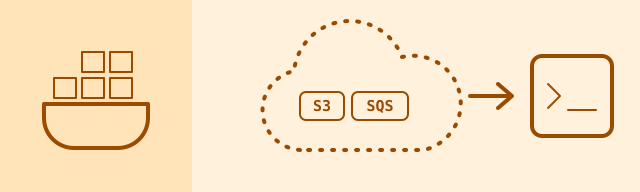
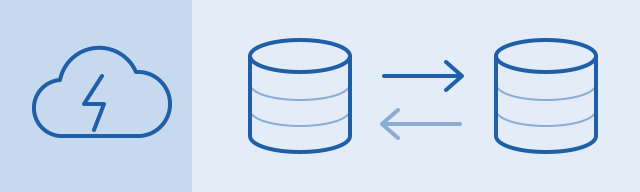
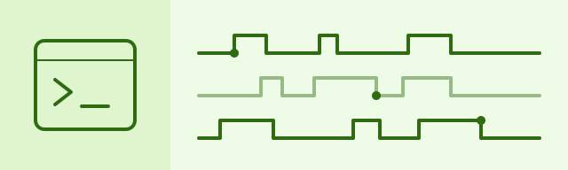
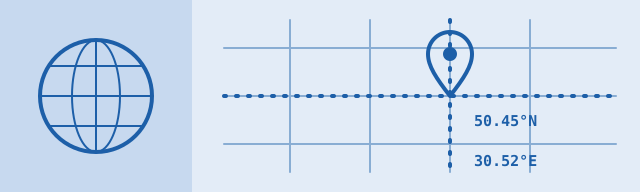
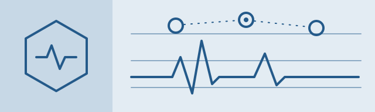
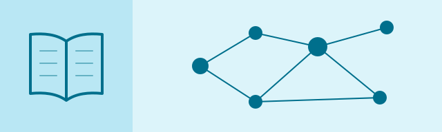
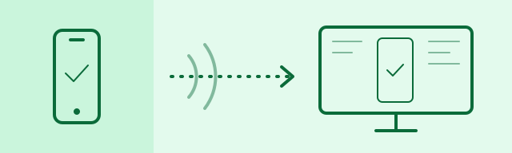

Project sites
-

Featured
aws-emulator-docker
Multi-arch (amd64/arm64) container image of the AWS Emulator, a local emulator of the AWS APIs. Signed, with SBOM and provenance. Published to GHCR, Docker Hub and Quay.io.
- amazon-linux
- arm64
- aws
- aws-emulator
- container-image
- cosign
- +14 more
-

Featured
cloud-cache-action
High-performance GitHub Action caching to any S3-compatible storage with 1:1 actions/cache parity, Node 24 runtime, and dual-caching
- actions-cache
- cache
- ci-cd
- cloudflare-r2
- github-actions
- minio
- +3 more
-

agent-signals
Measured signals of AI coding agents: terminal screens, hook payloads and session files, as a language-neutral test corpus.
- agent-tooling
- ai-agents
- claude-code
- codex-cli
- coding-agents
- hooks
- +3 more
-

geo-coordinates
Interactive lesson on geographic coordinates for 6th graders — English, Polish, Ukrainian. One offline HTML file.
- education
- geography
- html
- i18n
- interactive-lesson
- latitude-longitude
- +3 more
-

-

-

AndroidScreencast
View and control your android device on PC
- adb
- android
- android-device
- java
- jnlp
- remote-control